전기철도기사 (2018-08-19 기출문제)
1과목: 전기철도공학
1. 직류강체방식(T-bar)에서 지상부의 가공 전차선이 터널내로 들어와 강체 전차선으로 바뀌어지는 부분에 팬터 그래프가 자연스럽게 옮겨지면서 원활하게 운행할 수 있도록 하는 장치는?
- 건널선 장치
- 흐름 방지 장치
- 지상부 이행 장치
- 엔드 어프로치
(정답률: 62%)

2. 팬터그래프의 이선속도는 약 몇 km/h인가? (단, 가선방식:심플 커티너리, 공진속도:137km/h, 스프링계수 부등률:0.4)
- 82
- 116
- 137
- 170
(정답률: 58%)
3. 전차선과 가동브래킷의 수평파이프(진동방지파이프)의 수직 중심간격(mm)은? (단, 속도등급:300킬로급 이상)
- 350
- 420
- 600
- 800
(정답률: 82%)
4. AT 급전방식에서 전차선과 급전선간의 표준전압(kV)은?
- 25
- 50
- 60
- 75
(정답률: 79%)
5. 경량전철에서 추진력을 얻는 방식으로 궤도와 차륜의 점착력 대신 리액션 플레이트(reaction plate) 사이의 전자력을 추진력으로 사용하는 방식은?
- 철제차륜방식
- 고무차륜방식
- 모노레일방식
- LIM방식
(정답률: 73%)
6. 급전회로의 길이가 긴 선로에서 선로의 공진현상을 억제하는 장치는?
- R-C 뱅크
- 슬랙
- 스터드
- 매칭
(정답률: 72%)
7. 경간 60m, 구배 3‰으로 전차선이 낮아진다면, 전차선 높이가 5.2m인 경우 다음 전주의 전차선 높이(m)는?
- 4.52
- 5.02
- 5.52
- 6.02
(정답률: 63%)
8. 뇌의 파두장5㎲, 전파속도 500m/㎲라 할 때, 피뢰기의 직선적 유효보호 범위(m)는?
- 850
- 900
- 1000
- 1250
(정답률: 70%)
9. 전차선 110mm2의 아크전류가 3000A라면 전차선의 단선시점은 몇 초(s)인가?
- 0.03
- 0.15
- 0.25
- 0.35
(정답률: 64%)
10. 전차선로의 섬락보호지선 시설에 대한 설명으로 틀린 것은?
- 절연보호방식의 전차선로에서는 약 2.5km마다 구분하여 접지저항 20Ω 이하로 접지한다.
- 가공전차선 등의 가압부분과의 이격거리는 1.2m이상으로 한다.
- 섬락보호지선 지표상 높이는 5m 이상으로 한다.
- 비절연보호방식의 전차선로에서는 공용접지선에 접속한다.
(정답률: 72%)
11. 터널 시?종단에 설치하는 브래킷은 터널시?종점으로부터 몇 m 이내의 위치에 설치함을 원칙으로 하는가?
- 1
- 5
- 10
- 15
(정답률: 74%)
12. 전기차 운전속도에서 표정속도(V)를 구하는 식으로 옳은 것은? (단, V:표정속도(km/h), T1:순주행시간(h), T2:정차시간(h), L:운전거리(km))
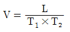
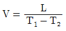
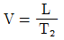
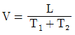
(정답률: 65%)
13. 가공전차선로의 기계적 구분 개소(에어조인트)에 사용 되는 커넥터로 옳은 것은?
- M - M - T - T커넥터
- T - T - M - M커넥터
- M - T - M - T커넥터
- T - M - M - T커넥터
(정답률: 84%)
14. T - bar 강체가선 브래킷의 표준간격(m)은?
- 3
- 5
- 9
- 14
(정답률: 84%)
15. 두 전차선 상호에 평행 부분을 일정간격으로 이격시켜 공기절연을 이용한 동상용 절연구분 장치는?
- 에어섹션
- 에어죠인트
- 섹션 인슐레이터
- 인류장치
(정답률: 80%)
16. 단권변압기 방식에소 보호선의 설치 목적이 아닌 것은?
- 급전선이나 전차선용 애자의 섬락사고 발생 시 금속 회로를 구성
- 변전소의 차단기를 차단시켜 애자류의 파손사고를 방지
- 지락사고로 인한 지지물 등의 접지전위 상승 억제
- 레일의 전위상승 효과
(정답률: 87%)
17. 빔 및 브래킷의 소재 허용응력에 대한 안전율은?
- 1.0 이상
- 1.9 이상
- 2.3 이상
- 3.0 이상
(정답률: 69%)
18. 인류구간의 양쪽에 활차식 자동장력 조정장치를 사용한 경우 흐름방지장치 시설에 대한 설명으로 틀린 것은?
- 흐름방지장치의 인류를 하기 전에 지선을 먼저 설치하여야 한다.
- 주축전주의 브래킷은 선로에 대해 수평이 되게 설치하여야 한다.
- 흐름방지장치의 양 인류전선은 해당 선로의 조가선과 동일한 전선으로 한다.
- 강체 가선구간에서는 인류구간?섹션? 중앙점에 흐름 방지장치를 시설한다.
(정답률: 61%)
19. 교류급전방식에서 위상이 90° 다른 M상과 T상이 혼촉한 경우의 고장 전류식은? (단, VMT:MT 혼촉전압, IMT:MT 혼촉전류, ZAT:AT누설 임피던스, Z0:전원 임피던스, ZM:ZT:변압기 임피던스)
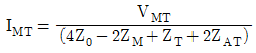
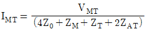
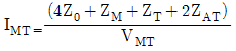
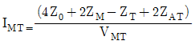
(정답률: 86%)
20. 교류급전방식에서 단권변압기의 설치방법으로 옳은 것은?
- 급전선과 전차선 사이에 직렬로 설치
- 급전선과 전차선 사이에 병렬로 설치
- 급전선과 보호선 사이에 직렬로 설치
- 급전선과 보호선 사이에 병렬로 설치
(정답률: 78%)
2과목: 전기철도 구조물공학
21. 지내력 측정이 필요한 점토지반의 경우 I형 기초저항 모멘트는 약 몇 tonf·m인가? (단, 기초폭 d=0.7m, 콘 지지력q=60tonf/m2, 기초길이 L=2.0m, 지형계수 K=1.0, 형상계수 f=1.0, 안전율 F=2.0)
- 9.5
- 10.23
- 11.51
- 12.42
(정답률: 40%)
22. 전기철도의 빔(Beam)중 고정식 빔의 종류가 아닌 것은?
- 고정 브래킷
- 크로스 빔
- 문형 고정빔
- 스팬선식 빔
(정답률: 74%)
23. 조합철주에서 단경사재를 사용하는 경우의 수평면에 대한 경사 각도는?
- 35°
- 40°
- 45°
- 50°
(정답률: 40%)
24. 태풍이 10분간 평균풍속 30m/s로 관측되었다. 순간 풍속의 관측값이 없을 경우 이 태풍의 5초간 최대 순간 풍속(m/s)은 얼마로 추정하는가?
- 30.5
- 36.2
- 40.5
- 45.5
(정답률: 67%)
25. 훅의 법칙이 성립되는 최대한도는?
- 극대 한도
- 비례 한도
- 특수 한도
- 탄성 한도
(정답률: 59%)
26. 힘의 ?요소가 아닌 것은?
- 크기
- 방향
- 모멘트
- 작용점
(정답률: 90%)
27. 구조물이 핀으로 연결되어 이동은 할 수 없고 회전만 가능한 것으로 반력은 수평반력과 수직반력 2개가 일어나는 지점은?
- 이동지점
- 힌지지점
- 고정지점
- 평형지점
(정답률: 65%)
28. 단독 지지주에서 지지점의 높이가 5.4m인 전차선에 126.7kgf의 수평집중하중이 작용하는 경우, 높이 4m 지지점에서의 전단력은 약 몇 kgf인가?
- 126.7kgf
- 177.4kgf
- 214.7kgf
- 429.5kgf
(정답률: 62%)
29. 가동 브래킷의 회전 억제저항은 전차선의 수직하중과 횡장력을 받은 상태에서 1개소 당 몇 kg 이하로 하는가?
- 1
- 2
- 3
- 4
(정답률: 60%)
30. 지선의 인장력에 대한 안전율은?
- 2.0이상
- 2.2이상
- 2.5이상
- 3.0이상
(정답률: 65%)
31. 전기철도 구조물의 강도계산에서 비중 0.9의 빙설이 전선류 주위에 6mm의 두께로 부착되고 외부 기온을 -0.5℃로 적용하는 풍압하중은?
- 갑종풍압하중
- 을종풍압하중
- 병종풍압하중
- 고온계풍압하중
(정답률: 63%)
32. 바깥지름이 3cm, 두께가 0.5cm인 원형단면 강관이 있다. 이 강관의 원형단면의 도심축에 대한 단면2차 모멘트(cm4)는?
- 2.⑤
- 3.19
- 4.12
- 6.38
(정답률: 48%)
33. 한 점에 작용하는 3개의 힘이 서로 평형을 이루고 있다면 이 3개의 힘은 동일한 평면상에 있고 일점에서 만나는데, 이때 각각의 힘은 다른 두 힘의 사이각의 정현(sine)에 정비례한다는 이론은?
- 훅크의 법칙
- 프와송의 법칙
- 라미의 정리
- 바이니온의 정리
(정답률: 73%)
34. 다음 보의 중앙부 C점에서의 휨모멘트는?
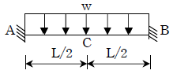
- wL2/6
- wL2/12
- wL2/24
- wL2/48
(정답률: 73%)
35. 다음 구조물에서 부정정차수가 가장 많은 것은?
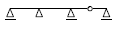
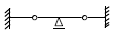
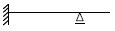
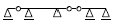
(정답률: 69%)
36. 전차선로의 곡선로에서 지지점과 경간 중앙에서의 기울기량이 같을 때, 전차선의 기울기를 나타내는 공식은? (단, d:전차선의 기울기량(m), S:경간(m), R:곡선반지름(m))
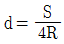
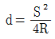
- d=S×R
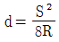
(정답률: 70%)
37. 전철용 전주가 단면이 20cm × 20cm이고, 이 전주에 40tf의 압축력이 작용할 때, 이 전주의 압축응력(kgf/cm2)?
- 50
- 80
- 100
- 500
(정답률: 78%)
38. 힘의 평형 조건식이 유지되기 위한 3대 평형방정식에 해당되지 않는 것은? (단, H:수평력, V:수직력, M:모멘트, T:장력)
- ∑H=0
- ∑V=0
- ∑T=1
- ∑M=0
(정답률: 71%)
39. 정육각형틀의 각 절점에 그림과 같이 하중 P가 작용할 때, 각 부재에 생기는 인장응력의 크기는?
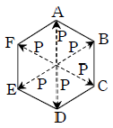
- P
- 2P
- 2/P
- P/√2
(정답률: 77%)
40. 전차선의 편위를 정할 때, 고려사항이 아닌 것은?
- 전기차의 동요에 따른 집전장치의 편위
- 곡선로에 있어서의 전차선의 편위
- 풍압에 따른 전차선의 풍압 편위
- 열차량의 증가에 따른 전차선의 편위
(정답률: 74%)
3과목: 전기자기학
41. 단면적 S(m2), 단위 길이당 권수가 n0(회/m)인 무한히 긴 솔레노리드의 자기인덕턴스(H/m)는?
- μSn0
- μSn20
- μS2n0
- μS2n20
(정답률: 50%)
42. 3개의 점전하 Q1=3C, Q2=1C, Q3=-3C을 점 P1(1, 0, 0), P2(2, 0, 0), P3(3, 0, 0)에 어떻게 놓으면 원점에서의 전계의 크기가 최대가 되는가?
- P1에 Q1, P2에 Q2, P3에 Q3
- P1에 Q2, P2에 Q3, P3에 Q1
- P1에 Q3, P2에 Q1, P3에 Q2
- P1에 Q3, P2에 Q2, P3에 Q1
(정답률: 56%)
43. 맥스웰의 전자방정식에 대한 의미를 설명한 것으로 틀린 것은?
- 자계의 회전은 전류밀도와 같다.
- 자계는 발산하며, 자극은 단독으로 존재한다.
- 전계의 회전은 자속밀도의 시간적 감소율과 같다.
- 단위체적 당 발산 전속 수는 단위체적 당 공간전하 밀도와 같다.
(정답률: 65%)
44. 전기력선의 설명 중 틀린 것은?
- 전기력선은 부전하에서 시작하여 정전하에서 끝난다.
- 단위 전하에서는 1/?0개의 전기력선이 출입한다.
- 전기력선은 전위가 높은 점에서 낮은 점으로 향한다.
- 전기력선의 방향은 그 점의 전계의 방향과 일치하며 밀도는 그 점에서의 전계의 크기와 같다.
(정답률: 70%)
45. 유전율 ?, 전계의 세기 E인 유전체의 단위체적에 축적되는 에너지는?
- E/2?
- ?E/2
- ?E2/2
- ?2E2/2
(정답률: 59%)
46. 유전율이 ?=4?0이고 투자율이 μ0인 비도전성 유전체에서 전자파의 전계의 세기가 E(z, t)=ay377cos(109t-βZ)(V/m)일 때의 자계의 세기 H는 몇 A/m인가?
- -aZ2cos(109t-βZ)
- -aX2cos(109t-βZ)
- -aZ7.1×104cos(109t-βZ)
- -aX7.1×104cos(109t-βZ)
(정답률: 25%)
47. σ=1℧/m, εs=6, μ=μ0인 유전체에 교류전압을 가할때, 변위전류와 전도전류의 크기가 같아지는 주파수는 약 몇 Hz인가?
- 3.0×109
- 4.2×109
- 4.7×109
- 5.1×109
(정답률: 50%)
48. 전계 E의 x, y, z성분을 Ex, Ey, Ez라 할 때, divE는?
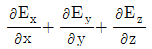
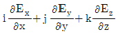
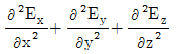
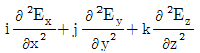
(정답률: 50%)
49. 평면도체 표면에서 d(m)거리에 점전하 Q(C)이 있을 때, 이 전하를 무한원점까지 운반하는데 필요한 일(J)은?
- Q2/4π?0d
- Q2/8π?0d
- Q2/16π?0d
- Q2/32π?0d
(정답률: 45%)
50. 비투자율 1000인 철심이 든 환상솔레노이드의 권수가 600회, 평균지름 20cm, 철심의 단면적 10cm2이다. 이솔레노이드에 2A의 전류가 흐를 때 철심 내의 자속은 약 몇 Wb인가?
- 1.2×10-3
- 1.2×10-4
- 2.4×10-3
- 2.4×10-4
(정답률: 40%)
51. 도체나 반도체에 전류를 흘리고 이것과 직각 방향으로 자계를 가하면 이 두 방향과 직각 방향으로 기전력이 생기는 현상을 무엇이라 하는가?
- 홀 효과
- 핀치 효과
- 볼타 효과
- 압전 효과
(정답률: 65%)
52. 자성체 경계면에 전류가 없을 때의 경계 조건으로 틀린 것은?
- 자계 H의 접선 성분 H1T=H2T
- 자속밀도 B 의 법선 성분 B1N=B2N
- 경계면에서의 자력선의 굴절
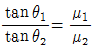
- 전속밀도 D의 법선 성분
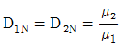
(정답률: 62%)
53. 길이 ℓ(m), 지름 d(m)인 원통이 길이 방향으로 균일하게 자화되어 자화의 세기가 H(Wb/m2)인 경우 원통 양단에서의 전자극의 세기(Wb)는?
- πd2J
- πdJ
- 4J/πd2
- πd2J/4
(정답률: 56%)
54. 진공 중에서 선전하 밀도 ρℓ=6×10-8C/m인 무한히 긴 직선상 선전하가 x축과 나란하고 z=2m 점을 지나고 있다. 이 선전하에 의하여 반지름 5m인 원점에 중심을둔 구표면 S0를 통과하는 전기력선수는 약 몇 V/m인가?
- 3.1×104
- 4.8×104
- 5.5×104
- 6.2×104
(정답률: 39%)
55. 그 양이 증가함에 따라 무한장 솔레노이드의 자기인덕턴스 값이 증가하지 않는 것은 무엇인가?
- 철심의 반경
- 철심의 길이
- 코일의 권수
- 철심의 투자율
(정답률: 60%)
56. 대지면에 높이 h(m)로 평행하게 가설된 매우 긴 선전하가지면으로부터 받는 힘은?
- h에 비례
- h에 반비례
- h2에 비례
- h2에 반비례
(정답률: 39%)
57. 자기인덕턴스 L1, L2와 상호인덕턴스 M사이의 결합계수는? (단, 단위는 H이다.)
- M/L1L2
- L1L2/L
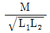
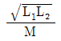
(정답률: 63%)
58. 판자석의 세기가 0.01Wb/m, 반지름이 5cm인 원형 자석판이 있다. 자석의 중심에서 축상 10cm인 점에서의 자위의 세기는 몇 AT인가?
- 100
- 175
- 370
- 420
(정답률: 39%)
59. 정전에너지, 전속밀도 및 유전상수 εr의 관계에 대한 설명 중 틀린 것은?
- 굴절각이 큰 유전체는 εr이 크다.
- 동일 전속밀도에서는 εr이 클수록 정전에너지는 작아진다.
- 동일 정전에너지에서는 εr이 클수록 전속밀도가 커진다.
- 전속은 매질에 축적되는 에너지가 최대가 되도록 분포된다.
(정답률: 50%)
60. 동심 구형 콘덴서의 내외 반지름을 각각 5배로 증가 시키면 정전 용량은 몇 배로 증가하는가?
- 5
- 10
- 15
- 20
(정답률: 59%)
4과목: 전력공학
61. 최소 동작 전류 이상의 전류가 흐르면 한도를 넘은 양(量)과는 상관없이 즉시 동작하는 계전기는?
- 순한시계전기
- 반한시계전기
- 정한시계전기
- 반한시정한시계전기
(정답률: 63%)
62. 최근에 우리나라에서 많이 채용되고 있는 가스 절연 개폐 설비(GIS)의 특징으로 틀린 것은?
- 대기 절연을 이용한 것에 비해 현저하게 소형화할 수 있으나 비교적 고가이다.
- 소음이 적고 충전부가 완전한 밀폐형으로 되어 있기 때문에 안정성이 높다.
- 가스 압력에 대한 엄중 감시가 필요하며 내부 점검 및 부품 교환이 번거롭다.
- 한랭지, 산안 지방에서도 액화 방지 및 산화 방지 대책이 필요없다.
(정답률: 73%)
63. 망상9Network)배전방식에 대한 설명으로 옳은 것은?
- 전압 변동이 대체로 크다.
- 부하 증가에 대한 융통성이 적다.
- 방사상 방식보다 무정전 공급의 신뢰도가 더 높다.
- 인축에 대한 감전사고가 적어서 농촌에 적합하다.
(정답률: 64%)
64. 서지파(진행파)가 서지 임피던스 Z1의 선로측에서 서지임피던스 Z2의 선로측으로 입사할 때 투과계수(투과파전압÷입사파전압)b를 나타내는 식은?
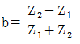
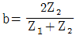
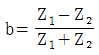
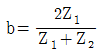
(정답률: 53%)
65. 배전선의 전압조정장치가 아닌 것은?
- 승압기
- 리클로저
- 유도전압조정기
- 주상변압기 탭 절환장치
(정답률: 57%)
66. 반지름 r(m)이고 소도체 간격 S인 4복도체 송전선로에서 전선 A, B, C가 수평으로 배열되어 있다. 등가선간 거리가 D(m)로 배치되고 완전 연가된 경우 송전선로의 인덕턴스는 몇 mH/km인가?
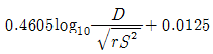
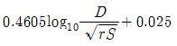
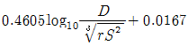
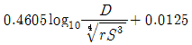
(정답률: 69%)
67. 송전계통의 안정도 향상 대책이 아닌 것은?
- 전압 변동을 적게 한다.
- 고속도 재폐로 방식을 채용한다.
- 고장시간, 고장전류를 적게 한다.
- 계통의 직렬 리액턴스를 증가시킨다.
(정답률: 62%)
68. 그림과 같은 선로의 등가선간거리는 몇 m인가?
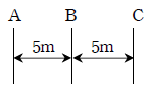
- 5
- 5√2
- 53√2
- 103√2
(정답률: 50%)
69. 화력발전소에서 재열기의 사용 목적은?
- 증기를 가열한다.
- 공기를 가열한다.
- 급수를 가열한다.
- 석탄을 건조한다.
(정답률: 53%)
70. 선로에 따라 균일하게 부하가 분포된 선로의 전력 손실은 이들 부하가 선로의 말단에 집중적으로 접속되어 있을 때보다 어떻게 되는가?
- 1/2로 된다.
- 1/3로 된다.
- 2배로 된다.
- 3배로 된다.
(정답률: 50%)
71. 송전선로에 복도체를 사용하는 주된 목적은?
- 인덕턴스를 증가시키기 위하여
- 정전용량을 감소기키기 위하여
- 코로나 발생을 감소시키기 위하여
- 전선 표면의 전위경도를 증가시키기 위하여
(정답률: 54%)
72. 변류기 수리 시 2차측을 단락시키는 이유는?
- 1차측 과전류 방지
- 2차측 과전류 방지
- 1차측 과전압 방지
- 2차측 과전압 방지
(정답률: 34%)
73. 발전기 또는 주변압기의 내부고장 보호용으로 가장 널리 쓰이는 것은?
- 거리계전기
- 과전류계전기
- 비율차동계전기
- 방향단락계전기
(정답률: 56%)
74. 배전선로에서 사고범위의 확대를 방지하기 위한 대책으로 적당하지 않은 것은?
- 선택접지계전방식 채택
- 자동고장 검출장치 설치
- 진상콘덴서 설치하여 전압보상
- 특고압의 경우 자동구분개폐기 설치
(정답률: 59%)
75. 송전전력, 송전거리, 전선의 비중 및 전력손실률이 일정 하다고 하면 전선의 단면적 A(mm2)와 송전전압 V(kV)와의 관계로 옳은 것은?
- A∝V
- A∝V2
- A∝1/√V
- A∝1/V2
(정답률: 45%)
76. 1년 365일 중 185일은 이 양 이하로 내려가지 않는 유량은?
- 평수량
- 풍수량
- 고수량
- 저수량
(정답률: 70%)
77. 3상용 차단기의 정격전압은 170kV이고 정격차단전류가 50kA일 때, 차단기의 정격차단용량은 약 몇 MVA 인가?
- 5000
- 1000
- 15000
- 20000
(정답률: 45%)
78. 기준 선간전압 23kV, 기준 3상 용량 500kVA, 1선의 유도 리액턴스가 15Ω일 때, %리액턴스는?
- 28.36%
- 14.18%
- 7.09%
- 3.55%
(정답률: 50%)
79. 송배전 선로의 전선 굵기를 결정하는 주요요소가 아닌 것은?
- 전압강하
- 허용전류
- 기계적 강도
- 부하의 종류
(정답률: 60%)
80. 3상 송전선로에서 선간단락이 발생하였을 때 다음 중 옳은 것은?
- 역상전류만 흐른다.
- 정상전류와 역상전류가 흐른다.
- 역상전류와 영상전류가 흐은다.
- 정상전류와 영상전류가 흐른다.
(정답률: 60%)